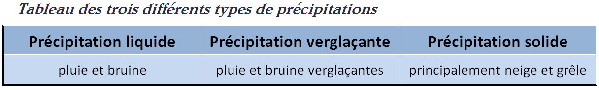
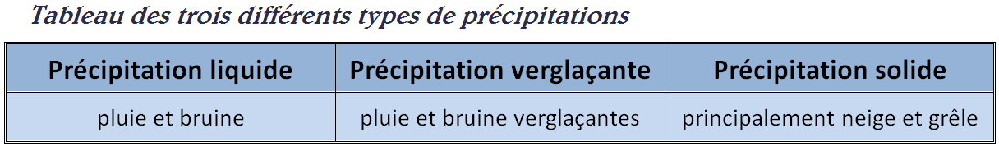

Les différentes précipitations et leurs formations
Les précipitations prennent forment à l’intérieur des nuages. Les gouttelettes d’eau à l’intérieur de ceux-ci se rapprochent les unes aux autres et grossissent en s’unissant. Ainsi, à partir d’une certaine taille, la goutte formée commence à descendre lentement dans le nuage. Elle accumule ainsi d’autres gouttelettes d’eau qui augmente sa masse et donc accélère sa chute. Si aucun événement extérieur ne vient altérer cette formation de gouttes (vents, turbulences,...), il se formera une faible pluie sous le nuage. Au contraire, les averses et les fortes pluies sont dues à de forts courants descendants présents dans le nuage.
Les précipitations existent sous deux formes et trois types différents :
 
La différence entre pluie et bruine est due à la taille des gouttes d’eau émises par la précipitation : On parle de bruine si ces gouttes d’eau ont un diamètre inférieur à 0,5 mm et de pluie le cas échéant.

La différence entre pluie et bruine est due à la taille des gouttes d’eau émises par la précipitation : On parle de bruine si ces gouttes d’eau ont un diamètre inférieur à 0,5 mm et de pluie le cas échéant.
Formation de neige :
Lorsque l’air est très froid, la vapeur d’eau ne forme pas de fines gouttelettes d’eau en se condensant mais des cristaux de glace. Ceux-ci vont ensuite s’agglomérer à l’intérieur du nuage pour former des flocons. Ces flocons font ainsi progressivement augmenter leur masse et, de la même manière que les gouttes d’eau, descendre dans le nuage, s’agglomérer avec d’autres flocons et enfin arriver à la terre ferme s’ils ne rencontrent pas de hautes températures susceptibles de les faire fondre.
Formation de grêle :
La grêle se forme dans les cumulonimbus. Elle est le résultat de petits cristaux de glace transportés à l’intérieur même du nuage par des courants ascendants et descendants. Ces cristaux vont constamment être refroidis dans la partie haute du nuage, grâce à l’air froid de l’altitude, et vont rencontrer les fines gouttelettes présentes dans la partie basse du nuage. A leur contact, ces gouttelettes de basse altitude vont se congeler et augmenter la taille des cristaux. Ainsi, la masse de ces grêlons augmente au fur et à mesure, jusqu’à devenir trop importante pour que les vents ascendants les transportent. C’est ainsi que la grêle se forme.